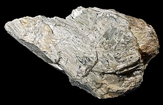

La wollastonita es un mineral del grupo VIII (silicatos), según la clasificación de Strunz. Recibe su nombre en honor al mineralogista inglés Sir W. H. Wollaston (1766-1828). Descrita desde 1818 por el mineralogista J. Léhman, fue dedicada al químico y también mineralogista inglés sir William Hyde Wollaston. [1] El mineralogista alemán A. Stütz, en el artículo de 1793 Neue Einrichtung der k.-k. Naturalien-Sammlung zu Wien, ya había hecho una descripción incompleta bajo el nombre de Tafelspath.
En la wollastonita los tetraedros de SiO4 están dispuestos en cadenas con una periodicidad de aproximadamente 730 pm equivalente a 3 unidades de SiO4. Su disposición es parecida a la de los piroxenos. Las iones de calcio se encuentran en un entorno octaédrico rodeados de 6 átomos de oxígeno. Una pequeña parte del calcio puede ser sustituida por iones de manganeso, hierro o magnesio.
Manganowollastonita - Color ligeramente rosado. Variedad de wollastonita rica en manganeso, que reemplaza parcialmente al calcio. Fórmula = (Ca,Mn) SiO3 Ferrowollastonita - Gris o marrón. Variedad de wollastonita rica en hierro, que reemplaza parcialmente al calcio. Fórmula = (Ca,Fe)SiO3
Manganowollastonita - Color ligeramente rosado. Variedad de wollastonita rica en manganeso, que reemplaza parcialmente al calcio. Fórmula = (Ca,Mn) SiO3 Ferrowollastonita - Gris o marrón. Variedad de wollastonita rica en hierro, que reemplaza parcialmente al calcio. Fórmula = (Ca,Fe)SiO3
Las principales aplicaciones de la wollastonita vieron su desarrollo a final de la década de 1970. como sustituto de los asbestos de fibra corta, Desde ese momento, el consumo mundial de la wollastonita ha tenido una importante progresión. La acicularidad del mineral es un factor importante para su uso industrial, tanto que su mercado se divide en dos tipos principales:
La wollastonita se ha consolidado hoy como un importante mineral industrial. Es un ingrediente necesario en la cerámica refractaria y utilizado como aditivo en pinturas (como antioxidante y anticorrosivo), siendo para ello tratado superficialmente con xilanos. En el sector cerámico sirve para rebajar el punto eutéctico de gresificación, incrementa de forma sensible la resistencia mecánica y mejora la permeabilidad sin producir desprendimientos gaseosos.
Se utiliza también en el sector cementero y en la industria del papel.
Su característica como mineral bioactivo le confiere una nueva aplicación en los implantes de huesos sintéticos, especialmente como efectivas prótesis vertebrales, donde se necesita una fuerte capacidad de sustentación
Actualmente ha adquirido un importante papel como mineral con importantes características que le confieren el calificativo de "ecológico", ya que su utilización en la industria cerámica permite la incorporación del ion Calcio a la pasta sin la introducción de carbonatos y, consiguientemente, sin desprendimientos de Dióxido de Carbono en las emisiones a la atmósfera por ese concepto. Asimismo reduce de forma muy importante los tiempos del ciclo de cocción, con los consiguientes ahorros energéticos y de emisiones gaseosas. Ello le supone un interés indudable ante el problema del denominado cambio climático, por el aspecto positivo que le confiere su apoyo al denominado Protocolo de Kioto.
Por otra parte, su cualidad de "adsorción química" lo constituye como un mineral -utilizable junto con los carbonatos que lo acompañan en los yacimientos- en los procesos de corrección y restauración ambiental, ya que hace que precipiten los metales pesados originados por el Drenaje Ácido de Minas y los fija de forma permanente a su estructura, impidiendo su redisolución posterior aunque perduren las condiciones ácidas de las aguas afectadas.
La aplicación de enmiendas edáficas con carbonatos wollastoníticos es una medida de eficacia probada para neutralizar los suelos ácidos por causa de actividades mineras hasta niveles tolerables por las plantas, y crear las condiciones edafogeoquímicas necesarias para inmovilizar metales pesados in situ.
Se trata de una medida de recuperación natural asistida, de bajo coste y apropiada para tratar grandes extensiones de suelos contaminados, que favorece la revegetación natural en los espacios mineros degradados y reduce la peligrosidad ambiental de los metales pesados potencialmente tóxicos,
La situación generada por el riesgo que producen las emisiones industriales de gases en el incremento del Efecto Invernadero ha propiciado un interés real para reducir las emisiones del dióxido de carbono. Ello ha puesto en evidencia la capacidad de la wollastonita aplicada en técnicas de secuestro mineral.
En condiciones simples (presión y temperatura ambiente), vía captura con una matriz de aerogel inorgánico y wollastonita en polvo, se consigue la fijación del CO2 con una alta eficiencia Chemically Active Silica Aerogel-Wollastonite Composites for CO2 Fixation by Carbonation Reactions. La reintroducción de los subproductos sólidos obtenidos al final del proceso como materias primas (cargas) de procesos conocidos (cementeras) permite que el reciclado de estos subproductos le otorgue al material sintetizado un valor añadido que revierte en la reducción del coste del proceso de eliminación del Gas de efecto invernadero (GEI) en estas industrias Fast CO2 sequestration by aerogel composites .
La wollastonita se forma por metamorfismo de contacto o metasomatismo de calizas silíceas o cualquier otra roca calcárea, mediante formación de Skarn. Artificialmente se puede obtener a partir de óxido de calcio (CaO) y cuarzo (SiO2).
Yacimientos importantes en: Nueva York, California, Nueva Jersey, Aldea del Obispo (Salamanca, España), Aroche (España), Vesubio (Italia); Perheniemi, Finlandia; Banato (Rumania); Sajonia (Alemania); Chiapas (México); Grecia; China (mayor productor mundial); Quebec (Canadá), Tremorgio (Suiza) y Sonora (México).
En experimentos con animales no se pudieron encontrar indicios de toxicidad o propiedades cancerígenas. Sin embargo el polvo respirado durante tiempos prolongados pudiera producir silicosis.